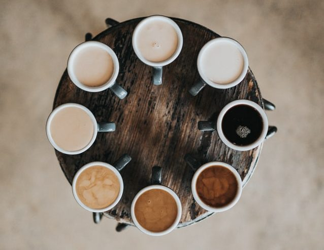
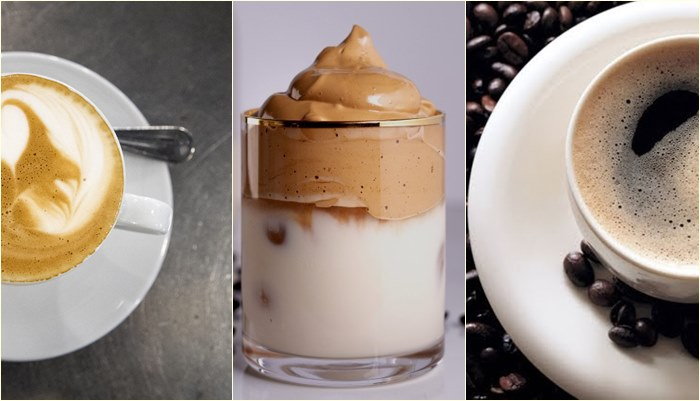
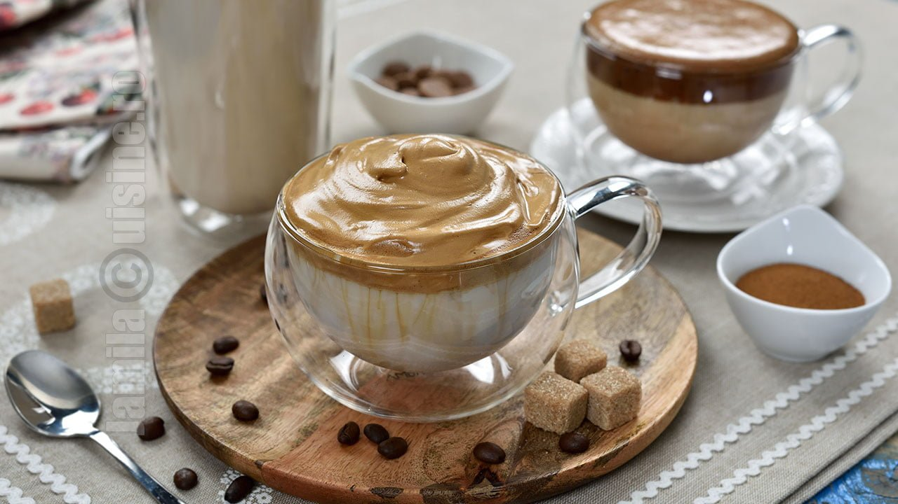
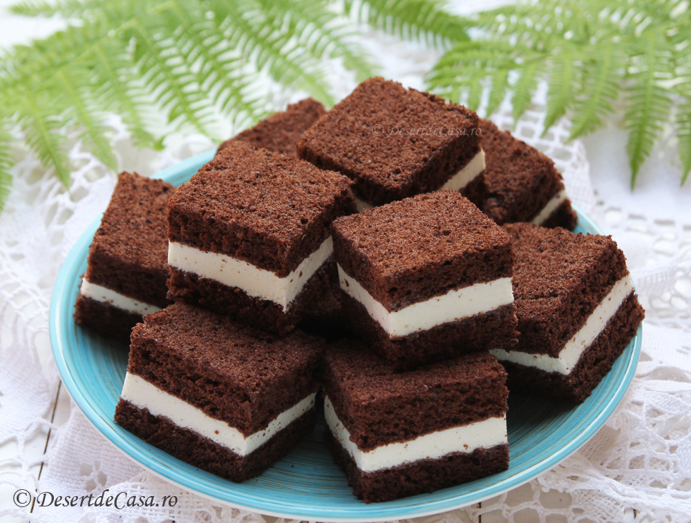
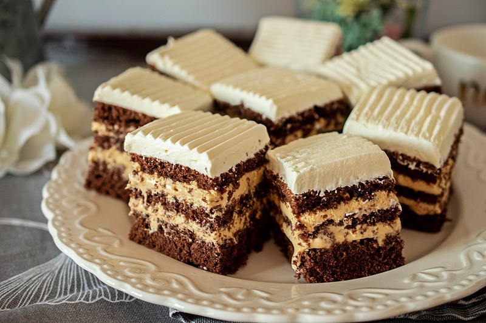
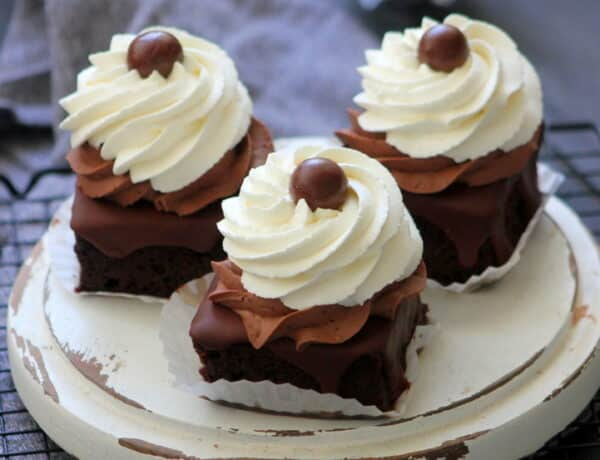
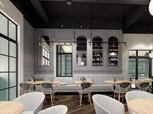
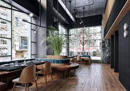
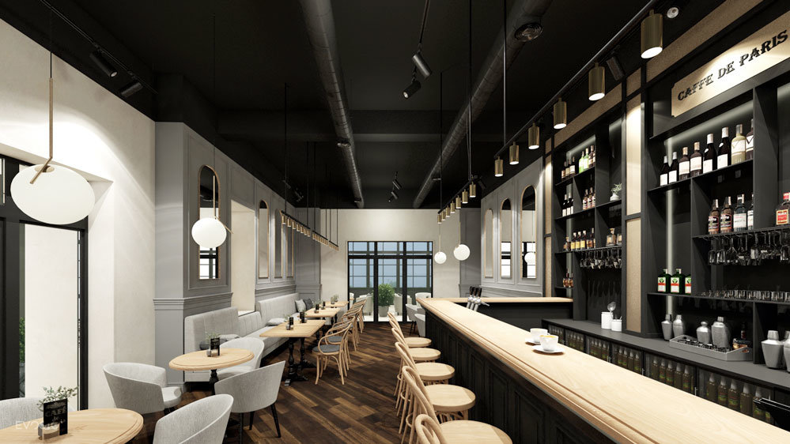

Istoric:
Am început de la un cont făcut pe rețelele de socializare în care postam prăjiturile pe care le făceam.
Cu timpul am început să primesc diferite cereri de a vinde aceste prăjituri.
Mi-am dat seama că oamenii chiar păreau să se bucure de ceea ce făceam, așa că am prins curaj să fac pasul următor.
Așa a apărut prima locație a cafenelei în anul 2010.
Aceasta a avut un succes neașteptat, așa că în anul 2015 deschideam deja alte două sedii.
Ultimul sediu a fost deschis în anul 2017.
Odată cu această extindere a afacerii și nevoile au început să fie din ce în ce mai diferite.
Am angajat o echipă de oameni care se ocupă ca totul să meargă bine.
Chiar dacă mediul s-a schimbat, ne dorim totuși să vă oferim o experiență cât mai plăcută și o amintire a deserturilor simple, făcute în casă.
Ce găsiți la noi:
În cafenelele noastre se găsește o gamă variată de torturi, prăjituri, fursecuri și bomboane, dar și o multitudine de opțiuni de băuturi, de la diverse sucuri până la o gamă variată de cafele.
În plus, în fiecare săptămână puteți beneficia de oferte speciale, precum o cafea gratis la fiecare prăjitură cumpărată.
     De ce aș alege să vin aici:
Cafenelele noastre oferă, pe lângă produsele vândute, un mediu plăcut în care să poți socializa cu prietenii, învăța, citi, lucra sau chiar relaxa după o zi grea sau la începutul unei zile solicitante.
  Nu rata evenimentele noastre:
De-a lungul celor mai bine de 10 ani de activitate, cafenelele noastre au găzduit o serie de evenimente, de la cluburi de carte la aniversări sau chiar la ședințe.
Organizăm și diferite zile dedicate evenimentelor ce se sărbătoresc în funcție de perioada anului.